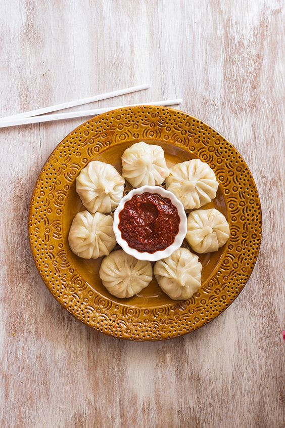

Chicken Momo

Chicken Momo
Chicken Momo is a popular dumpling dish famous in Tibet, Nepal, China and neighboring countries. Filled with a delicious mixture of minced chicken, onions, ginger, and a blend of aromatic spices.
These momos are typically encased in a thin dough wrapper and are either steamed, fried, or a combination of both, resulting in a delightful texture and flavor.
Ingredients:
- Minced Chicken
- Minced Onions
- Ginger
- Oil
- Monosodium Glutamate
- Thin Dumpling Wrappers
- Dalle Paste
- Garlic
- Momo Masala
Steps:
- Prepare the filling by combining minced chicken, minced onions, ginger, MSG and momo masala in a bowl.
- Place a small portion of the filling onto a thin dumpling wrapper.
- Fold and seal the dumpling to create a momo shape.
- Repeat the process for the remaining wrappers and filling.
- For steamed momos, steam them until cooked through. For fried momos, heat oil in a pan and fry until golden brown.
- Prepare the dipping sauce by mixing Dalle paste, garlic, soy sauce, and vinegar.
- Serve the momos hot with the dipping sauce.